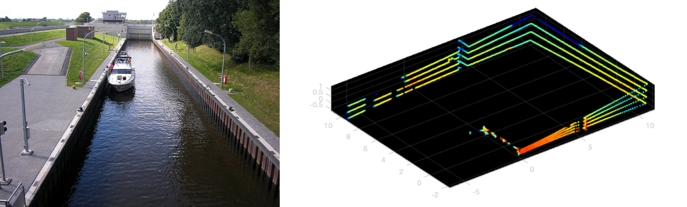
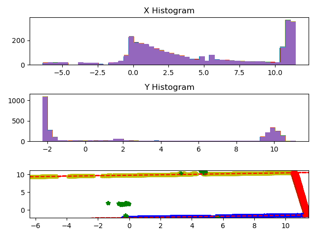
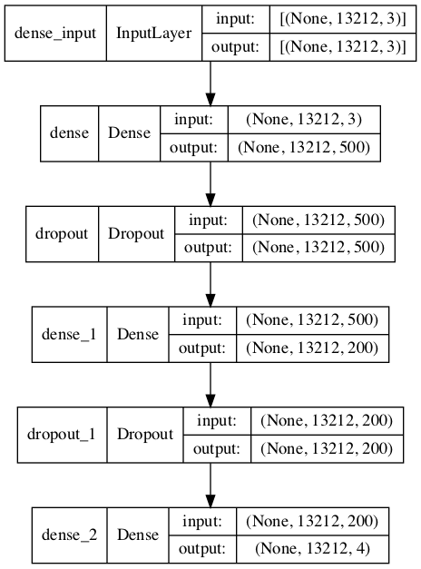

Goal of the project
The company where the team members were doing internship was facing the problem of determination of exact position of a ship in a lock (sluice). The company was trying to identify the sluice gate by applying Random sample consensus (RANSAC) to the data obtained by laser measurement using LiDAR onboard the ship through recognizing the edges. However, the RANSAC method has a lag in the recognition of the sluice gate, so a new method has been required.
Therefore, we tried to use machine learning to detect this sluice gate in real time as much as possible. The main points of the project are as follows.
- The LiDAR data is measured at 10 frames per second for 2.5 seconds and has 13212 measurement points (x,y,z)
- The data only contains coordnate data. Each data point is labeled and used as correct data
- Rotation and noise are added to the teacher data to add robustness to the training
- To improve real-time performance, we will develop a model that can make predictions with fewer data points, if possible
Result
The Least Median Squares method (LMS) was used for labeling the data.
\begin{equation} \min_{\hat{\theta}} \mathrm{med}_{i} r_i^2 \end{equation}Here, \(\hat{\theta}\) is a parameter vector and \(r_i^2=(y_i-\hat{y}_i)^2\). LMS is more robust against outliers than LSQ (Least squares method). As shown in the figure below, we checked the distribution of data for each x and y coordinate, identified the left and right walls (yellow and blue lines in the figure below). The sluice gate is indicated by the red line from the remaining points.
The following labels were used for labeling.
- 0 ; Points that belong neither to the wall nor to the sluice
- 1 ; Left wall
- 2 ; Right wall
- 3 ; Sluice (movable part)
We applied patterns of 10, 10, and 20 varieties of rotation in the x-, y-, and z-axes to all 25 labeled frames, respectively. After increasing the correct data to 1000 frames, Gaussian noise was randomly applied to artificially reproduce the laser measurement noise.
The convolutional neural network shown below was used for training. The labels of the input data are one-hot type, and the output layer uses the soft max function to solve a typical classification problem.
The training was completed in less than 300 epochs, with a final accuracy of 99.36%.
The blue line in the left figure represents the label of the correct answer, which can be 0 or 1 because of the one-hot function. The orange lines on top of the blue lines are the machine learning predictions. The possibility of each label is indicated by a value from 0 to 1, respectively. The sum of the predictions for a particular point is 1. The figure on the right plots the predictions. The red dots indicate that the predictions were wrong. However, overall, the predictions are very correct and can be used for practical purposes. The skew of the plot and the irregular arrangement of the points are due to rotation and noise.
Since the above model uses all the points in one frame for prediction, it can only predict every 0.1 second at most. In order to achieve more real-time prediction, we also developed a model that makes prediction based on information from only some points in the neighborhood.